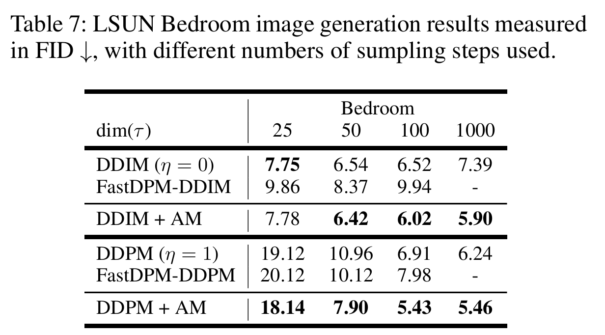

全文翻译
摘要
扩散概率模型（DPMs）已被证明能够生成高质量图像，且无需复杂的对抗训练。然而，当前DPMs中的采样过程容易出现剧烈波动。本文提出了一种受广泛使用的Adam优化器启发的新型DPMs反向采样器。该采样器可直接应用于预训练的扩散模型，通过动量机制和自适应更新来平滑反向采样过程，确保生成的稳定性，从而提升输出质量。通过隐式复用早期步骤的更新方向，所提采样器在高层语义与低层细节之间实现了更好的平衡。此外，该采样器具有灵活性，无论训练时使用何种采样器，都能轻松集成到预训练的DPMs中。在多个基准测试上的实验结果表明，所提反向采样器相较于不同基线方法有显著改进。我们将公开源代码。
引言
深度生成建模因其在理解和处理数据方面的重要性，已成为一个热门的研究领域。在图像生成领域，自Goodfellow等人提出生成对抗网络（GANs）以来，它便在该领域占据主导地位。与其他基于对数似然的生成模型（Kingma和Welling，2013；Hinton和Salakhutdinov，2006；Shao等人，2021）相比，GANs在质量和多样性方面都表现出优越性。然而，GANs中对抗训练的使用会导致训练过程不稳定和模式崩溃，这需要特定的优化技术和架构来解决。
作为对抗训练的替代方案，诸如扩散概率模型（DPMs）（Ho、Jain和Abbeel，2020；Song等人，2020）之类的迭代模型已成为一种很有前景的选择。去噪扩散概率模型（DDPM）（Ho、Jain和Abbeel，2020）及其变体（Nichol和Dhariwal，2021；Song、Meng和Ermon，2020）是基于迭代过程的模型流派之一，其过程包括两个阶段。第一阶段是将图像扩散为预定义的高斯噪声，第二阶段则尝试逆转该轨迹以恢复图像。作为近期的一项发展，去噪扩散隐式模型（DDIM）（Song、Meng和Ermon，2020）通过将DDPM转变为一个隐式过程，设计出了一种加速版本，并有助于减少图像生成过程中的时间步数。同时，基于分数的方案（Song和Ermon，2019，2020；Song等人，2020）是一种理论版本，其工作机制相同。基于分数的模型的主要区别在于它利用解析工具——随机微分方程（SDEs）来对图像进行扩散和去噪。扩散模型和基于分数的模型这两种迭代方案，基于在DDIM中观察到的其优化技术与常微分方程（ODEs）之间的关键联系而得到了统一。因此，由于这两类模型属于同一更广泛的范畴，我们在本文中将重点关注扩散模型。
DPMs中最初的反向过程基于马尔可夫链（Ho、Jain和Abbeel，2020），可以被视为扩散过程的随机微分方程（SDEs）的一种简单数值解。然而，DPMs中使用的这种简单反向生成迭代，例如DDPM或DDIM，往往会遇到狭窄的谷值、小的峰值，导致生成的图像中出现过多噪声或缺失高层元素，如图1a中的示例所示。其中一个原因是DPMs中使用的简单采样器在每个时间步都采用带噪声的更新，这可能导致采样不稳定。此外，DDPM对马尔可夫过程的使用使得每个步骤都要推导出新的更新方向，而不考虑步骤间的全局轨迹，这加剧了该问题。
| 图1：当前扩散概率模型（DPMs）的反向采样过程通常存在剧烈波动，这可能导致生成的图像中出现过多噪声或缺失高层组件。为解决这一问题，本文提出了一种带有自适应动量（AM）的新型采样器。 |
这些局限性促使我们开发一种新的采样器，它能够更有效地探索步骤间的更新信号，以稳定采样过程，并帮助扩散模型摆脱局部最优。在本文中，我们提出了一种用于扩散模型的无需训练的新型反向采样器，通过模仿著名的Adam优化器（Kingma和Ba，2014）来提高生成样本的质量，Adam优化器在神经网络训练中已展现出卓越的性能。具体而言，所提出的采样器通过累积跨步骤的速度向量来平滑更新方向，从而以非马尔可夫的方式运行。同时，它还维持二阶矩的移动平均值，以自适应地调整更新速度，这相当于一种自然的步长退火形式。
所提出的采样器的第一个优势是能够更好地在生成高层语义（如形状和轮廓）与恢复低层细节（如精细纹理）之间进行权衡。为了说明这一点，我们参考图2，该图展示了使用我们的新型采样器，在不同动量尺度下运行1000步DDPM后，从最终迭代$\bar{x}_{0}$生成的图像。动量值（b）从左到右（0到1.75）逐渐增加，表明对早期步骤的依赖程度在增加。随着动量增大，最终图像会优先呈现复杂的图案和纹理，同时也能保持形状和轮廓。通过展示不同动量程度的影响，这些最终图像直观地说明了自适应动量采样器在保留高层语义的同时改善低层细节的能力。
| 图2：这些图像是使用我们的新型采样器在不同动量尺度下运行1000步DDPM后，从最终迭代$\bar{x}_{0}$生成的。动量值（b）从左到右（0到1.75）逐渐增加，表明对早期步骤的依赖程度在增加。随着动量增大，最终图像会优先呈现复杂的图案和纹理，同时也能保持形状和轮廓。通过展示不同动量程度的影响，这些最终图像直观地说明了自适应动量采样器在保留高层语义的同时改善低层细节的能力。 |
所提出的采样器的第二个优势是它具有灵活性，能够轻松与现有的预训练扩散模型集成。这种非参数化的采样器不需要额外的训练，其动量在采样过程中会动态调整。这种适应性在缓解训练-测试差距方面特别有利，因为该采样器可以轻松接入使用不同采样器或自定义设置预训练的扩散模型中。
在五个常见基准数据集（CIFAR-10（Krizhevsky、Hinton等人，2009）、CelebA（Liu等人，2018）、ImageNet（Deng等人，2009）、LSUN（Yu等人，2015）和CelebA-HQ（Karras等人，2017））上的实验结果表明，所提出的自适应动量采样器在生成质量方面对DDPM和DDIM都有改进。总之，本文的贡献是新提出了一种平衡、灵活且性能优异的采样器，它可以轻松应用于预训练的扩散模型。
相关工作
扩散概率模型（Ho、Jain和Abbeel，2020）已被用作一种有效的生成模型，避免了生成对抗网络（GANs）中的对抗训练（Goodfellow等人，2014）。通过实现扩散的反向过程，去噪扩散概率模型（DDPMs）能够重建图像。然而，如前所述，DDPMs由于需要大量的迭代时间步长，存在计算成本高昂的问题。为解决这一问题，DDIM（Song、Meng和Ermon，2020）对模型进行“隐式化”处理，使其能够以少得多的迭代次数运行，与DDPM相比显著减少了推理时间。
另一方面，基于分数且通过随机微分方程（SDE）实现的模型也是扩散模型的一种新方法，其中扩散过程和去噪过程均由随机微分方程建模。Yang Song等人（Song和Ermon，2019）首次提出通过动态朗之万采样技术从潜在噪声生成样本。作者利用去噪分数近似方案（Vincent，2011），其中噪声的轨迹记录在评分网络$s_\theta$中。该网络通过噪声条件分数网络进行训练。随着DDPM/DDIM（Song、Meng和Ermon，2020）与基于分数的模型的并行发展，且这两种方案均以扩散和去噪机制为核心，Yang Song（Song等人，2020）提出通过随机微分方程（SDE）对扩散过程进行建模，以统一这两个流派。扩散过程被建模为伊藤随机微分方程的解。其目标是构建一个扩散过程$\{x(t)\}_{t=0}^{T}$，时间索引$t \in [0, T]$是一个连续变量，且$x(0) \sim p_0$属于原始数据分布。
改进的去噪概率模型（Dhariwal和Nichol，2021；Dockhorn、Vahdat和Kreis，2021；Zheng等人，2022）提出通过使用条件信息来提高DDPM的质量。尽管这些模型取得了显著的性能，但它们需要训练额外的分类器来获取噪声感知信息。此外，在许多实际任务中，训练这些模型所需的标签收集成本也很高。在这项工作中，我们除了训练图像外，不使用其他额外信息。（Kim等人，2022）通过将静态截断超参数软化为随机变量来改进DDPM。Ho等人在（Ho等人，2022）中也提出了级联扩散模型，与DDPM相比，其生成的合成图像更优。然而，这些工作需要重新训练计算成本高昂的DDPM，才能获得比原始基线稍好的结果。在这项工作中，我们提出了一种动量方案，可以在预训练的DDPM模型上运行。因此，我们可以避免大规模训练DDPM/DDIM模型，同时仍能通过提高图像质量获得丰硕成果。
预备知识
去噪扩散概率模型
通常，高斯扩散模型用于通过$p_{\theta}(x_{0})$来近似数据分布$x_{0} \sim q(x_{0})$，其中$p_{\theta}(x_{0})$被建模为潜变量模型的形式：
这里，$x_{1}, x_{2}, \ldots, x_{T}$是与$x_{0}$维度相同的潜变量
因此，在时间步$t$时，从数据分布到高斯分布的扩散过程可以表示为：
其中$\alpha_{t}:=\prod_{i=0}^{t}(1-\beta_{i})$且$\epsilon \sim N(0, I)$。Ho等人（Ho, Jain, and Abbeel 2020）训练了一个U-net（Ronneberger, Fischer, and Brox 2015）模型$\theta$，通过最大化以下变分下界来拟合数据分布$x_{0}$：
其中$q(x_{1: T} | x_{0})$是特定的推理分布，可以通过贝叶斯定理利用$x_{0}$和$x_{T}$计算得到，其作用对象是潜变量。
去噪扩散隐式模型
DDPM对马尔可夫过程的依赖存在两个主要问题。首先，由于马尔可夫特性，生成过程被迫采用与扩散过程数量相近的时间步长。其次，随机过程会导致合成图像存在不确定性，这对潜在空间中的图像插值构成了挑战。
DDIM将DDPM推广为一种非马尔可夫过程。与式（1）不同，$x_{t-1}$同时以$x_t$和$x_0$为条件：
其中，$q_{\sigma}(x_{t-1} | x_{t}, x_{0})$的选择需满足$q_{\sigma}(x_{T} | x_{0})=\mathcal{N}(\sqrt{\alpha_{T}} x_{0},(1-\alpha_{T}) I)$
由式（2）可知，通过对$x_0 \sim q(x_0)$和$\epsilon_t \sim \mathcal{N}(0, I)$进行采样，可得到$x_t$。通过训练模型$\epsilon_{\theta}^{(t)}$以预测每个时间步的$\epsilon_t$，$x_0$的预测函数$f_{\theta}^{(t)}$定义为：
由此得到整个生成过程：
其中，$\theta$通过式（3）进行优化，且式（4）中定义了$q_{\sigma}(x_{1:T} | x_0)$。基于所定义的生成过程，给定样本$x_t$，可对$x_{t-1}$进行采样：
其中，$\sigma_t=\eta \sqrt{(1-\alpha_{t-1}) /(1-\alpha_{t})} \sqrt{1-\alpha_{t} / \alpha_{t-1}}$，且$\eta=0$（Song, Meng, and Ermon 2020）、$\eta=1$（Song, Meng, and Ermon 2020）或$\eta=\sqrt{(1-\alpha_{t}) /(1-\alpha_{t-1})}$（Ho, Jain, and Abbeel 2020）。Yang Song等人（Song and Ermon 2019）已证明，当$\eta=\sqrt{(1-\alpha_t)/(1-\alpha_{t-1})}$时，式（5）本质上是同一反向时间SDE的另一种离散化形式；Jiaming Song（Song, Meng, and Ermon 2020）表明，当$\eta=0$时，式（5）类似于用于求解ODE的欧拉积分。附录B中我们将说明，当$\eta=1$（属于DDPM的一种情况）时，反向过程是同一反向时间SDE的近似解。
方法
本文提出了一种无需训练的自适应动量采样器，旨在生成高质量图像，该采样器能够在先前探索的路径与当前去噪方向之间建立长期联系。本节第一部分将介绍如何将基本动量方法整合到DDPM/DDIM的原始推理过程中。之后，我们将阐述如何利用先前增量的平方移动平均值来有效调整去噪的步速。在每个部分中，我们还将展示如何在高层信息和低层信息之间进行权衡设计。
动量采样器
我们利用动量方法为扩散模型实现更好的反向过程。动量方法广泛用于加速神经网络训练中的梯度流优化。对先前搜索方向的记忆有助于优化器克服狭窄的谷值和小的峰值。我们发现，动量方法也有助于扩散随机微分方程（SDEs）和常微分方程（ODEs）的反向过程。
受神经网络优化中带动量的随机梯度下降（SGD）的启发，我们在扩散模型的反向过程中用动量方法替代欧拉-马尔可夫方法，以避免上述困境。如图3所示，在采样阶段观察到一种现象：反向采样$x_t$的过程（蓝线）充满噪声且有许多波动，而根据式（5）预测的$x_0$（红线）则相对稳定且易于处理。因此，采样过程包含一些趋势信息，这使我们的动量采样器能够利用此类信息并改进采样过程。
| 图3：折线图展示了DDPM反向过程（如式5所示）中生成的$x_{t}$（蓝线）和预测的$x_{0}$（橙线）的一个像素值。上下图片分别是对应的第t次生成的$x_{t}$和预测的$\hat{x}_{0}$。 |
然而，式（5）中的三个项相互依赖且互补，因此我们使用单个动量项联合跟踪这些项的历史。我们首先将式（5）重复为$x$的增量形式。为简洁起见，我们令$\overline{x}_t = \frac{x_t}{\sqrt{\alpha_t}}$，且$\mu = \left( \sqrt{\frac{1 - \alpha_{t-1} - \sigma_t^2}{\alpha_{t-1}}} - \sqrt{\frac{1 - \alpha_t}{\alpha_t}} \right)$。
然后，我们可以将$\overline{x}_t$的增量公式化，并将DDPM（或DDIM）迭代式（5）重写为：
我们不再仅依赖单个上一步的结果来生成样本，而是通过以下方式整合先前方向的影响：
其中$a$是阻尼系数，且$a$是依赖于历史的速度系数。由于高斯分布的叠加性质，我们使用球形约束$a^2 + b^2 = 1$来平衡动量和当前值。$m_t$是第$t$次迭代的当前动量，且$m_T = 0$。动量方法的强度由$a$和$b$系数控制。
自适应动量采样器
在本节中，我们研究如何基于最近增量$d\overline{x}_t$的大小的滑动平均值来调整学习率。除了仅利用动量的移动平均值这一优势的基于动量的采样过程外，均方根传播（RMSProp）（Mukkamala和Hein，2017）的思想也可应用于概率扩散模型的生成过程。具体而言，我们模仿RMSProp，通过每个像素上的衰减平均值自动调整步长。这样，过程求解器将专注于最近观察到的局部梯度，并丢弃图3蓝线中来自遥远过去的历史信息。
我们提出一种自适应动量采样过程，该过程在每个时间步为每个像素自适应调整学习率。去噪步长的自适应调整不仅基于一阶矩的平均值，还基于梯度二阶矩的平均值。在动量采样过程的基础上，我们使用$v_t$来存储先前平方增量的指数衰减平均值：
其中$c$是控制平方增量移动平均值的衰减率，$v_t$是当前先前平方增量的平均值，且$v_T = 1$，$\zeta$是平滑项（一个小的数值）以避免除以零。我们使用这种二阶矩的移动平均值使反向过程专注于当前的高频信息，以避免图像过度平滑。与低频信息相比，高频信息（如图像的图案和精细纹理）对二阶增量$d\overline{x}$更敏感。在这种假设下，高频信息的步速将被自适应放大，而低频信息的步速则相对稳定。自适应动量采样器能够进一步平衡高频信息和低频信息。
算法1展示了自适应动量采样器的过程。具体而言，我们使用动量增量$m_{t-1}$来替代带噪声图像第$t$次迭代的当前增量。$a_t$和$b_t$在先前和当前时间相关的分数函数之间建立权衡，展示了反向过程的强大数值求解器。如图2所示，这种调整可以迫使反向采样过程仅关注早期步骤，以生成更多高层语义（如形状和轮廓），并平滑低层信息（如详细图案和纹理）。$c$控制二阶矩估计的指数衰减比例。为避免每个像素的动量增量幅度发生过大变化，我们累积$d\overline{x}_t$的$L_2$范数的平方，并在实现过程中设置$v_T = 1$。当$c = 1$始终成立时，基本动量采样器可被视为自适应动量求解器的一种特殊情况。如果在所有第$t$次迭代中$a = 0$、$b = 1$且$c = 1$，则采样过程将退化为原始的DDPM或DDIM生成过程。
实验
在本节中，我们将定量地证明所提出采样方法的有效性。首先，我们会介绍实验设置。接下来，将该方法与基线采样器进行定量评估。在不同数据集上，我们会重点强调该方法相较于基线方法的改进之处。最后，我们将进行消融实验，以考察每个超参数的影响。
实验设置
- 数据集：遵循DDPM/DDIM和潜在扩散模型（LDM）（Rombach等人，2022）中的大多数设置，我们在实验中使用了CIFAR10（Krizhevsky、Hinton等人，2009）（32×32）、CelebA（Liu等人，2018）（64×64）、ImageNet（Deng等人，2009）（64×64）、LSUN（Yu等人，2015）（256×256）和CelebA-HQ（Karras等人，2017）（256×256）。
- 配置：我们主要采用原始的DDIM、DDPM、Analytic-DPM（Bao等人，2022）和LDM作为对比，因为这些方案是可靠且紧凑的基线。尽管如此，我们提出的方案也可以应用于其他改进的变体。对于DDPM/DDIM和Analytic-DPM，在每个数据集上使用相同的预训练扩散模型，分别用普通采样器和结合了我们自适应动量的采样器（“+AM”行）来生成数据。CIFAR10、LSUN和CelebA-HQ的预训练模型来自DDPM（Ho、Jain和Abbeel，2020），CelebA和ImageNet的预训练模型分别来自DDIM（Song、Meng和Ermon，2020）和IDDPM（Song和Ermon，2020）。此外，我们还使用来自LDM（Rombach等人，2022）的预训练模型来生成高分辨率图像。ImageNet的采样步数设为4000，其他数据集的采样步数设为1000。对于公式（5），我们选择了三个η值，η=0相当于DDIM，η=1是（Song、Meng和Ermon，2020）中的DDPM情况，η=η̂是其原始论文（Ho、Jain和Abbeel，2020）中的另一种DDPM情况。当采样步数与原始预训练模型的步数不同时，我们遵循DDIM中提出的相同策略，用相应的缩放后的ατ替换αt。采样过程的所有超参数都在附录中给出。我们的实验在一个节点上运行，该节点配备8块NVIDIA A100 GPU。除了CelebA，生成过程都使用混合精度技术进行加速。我们用“AM”表示使用我们提出的自适应动量方案进行采样。
- 评估指标：与许多其他生成模型（Goodfellow等人，2014；Bao等人，2022；Nichol和Dhariwal，2021；Ho、Jain和Abbeel，2020）类似，我们主要采用两个评估指标，即弗雷歇 inception 距离（FID）和 inception 分数（IS）（Lucic等人，2018；Borji，2019）。IS与人类标注者的判断高度相关（Salimans等人，2016）。尽管如此，这种度量方法通常被认为是一种衡量类间多样性的方法，对同一标签内图像的多样性不太敏感（Lucic等人，2018；Borji，2019）。相比之下，FID还能检测类内模式崩溃（Lucic等人，2018）。因此，FID被认为是图像生成任务更好的度量指标。FID值越低表示性能越好，而IS值越大表示性能越好。每个实验中，我们抽取50K个样本进行评估。
整体性能
我们提出的采样方案首先在表1和表2中与DDPM和DDIM的基线采样器进行了比较。在每个数据集上使用相同的预训练扩散DDPM/DDIM，分别用普通采样器和结合了我们自适应动量的采样器（“+AM”行）生成数据。Analytic-DPM（Bao等人，2022）和LDM（Rombach等人，2022）采样器也被用作基线，以证明我们的方法在不同扩散方案上的有效性。
表1展示了在低分辨率图像生成任务上，我们提出的采样方案相较于基线的改进，这些低分辨率数据集包括CIFAR10（32×32）、ImageNet（64×64）和CelebA（64×64），评估指标为IS（↑）和FID（↓）。值得注意的是，在每个数据集上，我们使用相同的预训练扩散模型，仅采用不同的采样策略。在FID指标上，自适应动量采样（“+AM”）相较于大多数数据集上的基线都有显著改进。我们的方法与基线的IS值相近是合理的，因为自适应动量主要是平滑采样轨迹，不会改变图像的标签，而IS仅对类间多样性敏感。
| 表1：低分辨率图像生成结果（CIFAR10（32×32）、ImageNet（64×64）和CelebA（64×64）），评估指标为IS（↑）和FID（↓）。注意，在每个数据集上，我们使用相同的预训练扩散模型，仅采用不同的采样策略。在FID指标上，自适应动量采样（“+AM”）相较于大多数数据集上的基线都有显著改进。我们的方法与基线的IS值相近是合理的，因为自适应动量主要是平滑采样轨迹，不会改变图像的标签，而IS仅对类间多样性敏感。 |
| 表1：低分辨率图像生成结果（CIFAR10（32×32）、ImageNet（64×64）和CelebA（64×64）），评估指标为 inception 分数（IS，↑）和弗雷歇 inception 距离（FID，↓）。注意，在每个数据集上，我们使用相同的预训练扩散模型，仅采用不同的采样策略。在FID指标上，自适应动量采样（“+AM”）相较于大多数数据集上的基线方法都有显著改进。我们的方法与基线方法的IS值相近是合理的，因为自适应动量主要用于平滑采样轨迹，不会改变图像的标签，而IS仅对类间多样性敏感。 |
表1的结果表明，在大多数低分辨率数据集（低于64×64）上，自适应动量采样在FID指标上相较于基线有改进。在CelebA数据集上，所提出的方法相较于η=1的DDPM表现显著更好。它不仅比基线高出约50%，还在该数据集上达到了最先进的水平，FID约为2.29。在CIFAR10上，尽管基线的FID已经很低，但我们仍有改进空间，从3.16降至3.03。
表2显示，当应用于高分辨率数据集（如CelebA-HQ、LSUN教堂和LSUN卧室）时，我们的自适应动量方案在大多数基线上都有显著改进。我们还证明了我们的方法与流行的高分辨率模型（潜在扩散模型）的兼容性，这表明我们的方法可以轻松整合到其他基于DPM的方法中。这些结果证明了我们的自适应动量方案在改进各种生成模型性能方面的灵活性。
| 表2：高分辨率图像生成结果（CelebA-HQ（256×256）、教堂（256×256）和卧室（256×256）），评估指标为弗雷歇 inception 距离（FID，↓）。在FID指标上，自适应动量采样（“+AM”）在所有数据集上相较于基线方法都有显著改进。 |
图5展示了不同方法生成样本的定性比较。与原始DDPM采样器相比，我们提出的自适应动量采样器生成的图像具有更真实的细节和更清晰的物体轮廓，这证实了其能够更有效地平衡高层信息和低层信息。例如，我们的方法在保留原始图案的同时增强了图像细节，如第2行第4列中恢复的人物结构，以及第2行最后一张图片中增强的面部细节（额头头发）。
| 图4：这个一维数据的示例在200步内生成两个点$x=-2$和$x=4$。背景是包含10,000个样本的热图。此外，青色和金色的线分别代表使用原始DDPM采样器和我们的动量采样器的生成采样过程的值。 |
| 图5：ImageNet和CelebA-HQ的生成样本。 |
消融实验
本小节研究了不同设置的各个方面，包括不同的时间步长和超参数的影响。
- 不同的采样步数：表3展示了在CIFAR10上使用更少的采样步数进行加速时，我们方法的性能。所提出的方法在使用不同采样步数时，性能更好或相当。在大多数设置下，与原始DDPM采样器相比，我们的方法最多可以提供50%的性能提升。可以观察到，在采样步数较多时，改进显著，而在采样步数较少时，改进不太明显。这是合理的，可能是因为使用较少的采样步数并不总是足以进行准确的动量估计和噪声抑制。
| 表3：该表展示了使用不同采样步数时生成结果的弗雷歇 inception 距离（FID，↓）分数。 |
- 超参数与消融实验：考虑到公式（7）和（8）中b和c的影响，我们在CIFAR10上设置了不同的值，如表4所示。前五行展示了当c=0时，随着b的增加，生成图像的FID如何变化。总体而言，图像质量会先提高后下降。当b=0.15时，在不同采样步数下，生成图像的FID达到最低值，这是最佳的权衡点。最后四行展示了当b=0.15时，c对采样结果的影响。类似地，当c减小时，FID先下降后上升。最后四行反映了在b=0.15时c的影响，其中大多数最佳性能在c=0.01时获得。根据经验，不同的去噪步骤可以共享相同的超参数，如表3和附录所示。因此，我们只需要在较少的去噪步骤（例如100或200）中找到b_max，如10⁻³、10⁻²。大多数超参数值在不同数据集上是共享的。对于高分辨率图像，我们建议选择b=10⁻³或10⁻²，c=0.01作为默认值。
| 表4：该表展示了超参数实验的结果，评估指标为生成图像的弗雷歇 inception 距离（FID，↓）。不同b和c值下的最佳结果用方框标记，每列的最佳结果用粗体显示。 |
表4还展示了对我们提出的方法（自适应动量采样器）的消融实验结果。前五行展示了仅使用动量增量的移动平均值时的采样结果。此外，第一行和第四行的比较表明，我们提出的方法优于原始反向过程采样器，这凸显了动量思想的有效性。此外，第四行和第八行的比较表明，通过二阶矩的移动平均值引入自适应性，进一步提高了我们自适应动量采样器的性能，这展示了其优异的泛化能力。
结论
在这项研究中，我们提出了一种无需训练的采样器，用于改进扩散生成模型生成的图像质量，特别是在离散时间步长设置下。通过大量实验，我们发现自适应动量采样器有助于平滑去噪轨迹，从而提高生成图像的质量。在未来的工作中，我们将把该方案扩展到连续设置以及更完善的理论版本中。
《利用自适应动量采样器增强扩散模型》附录
在本节中，我们提供了关于自适应动量采样器的额外实验、证明以及生成样本。
实验
本节展示了我们如何选择超参数，以及在CIFAR10、ImageNet、CelebA、CelebA-HQ、LSUN卧室和教堂数据集上使用不同方法进行的额外实验，还包括动量的自适应特性。
超参数详情
表5和表6概述了我们方法中用于获得表1和表2结果的超参数b和c。值得注意的是，对于同一数据集，使用不同方法（DDPM/DDIM）时，超参数的选择相似。同样，对于相同的预训练模型和类似的采样方法，例如“DDPM + AM”和“Analytic-DDPM + AM”，超参数的选择也可以相似。
| 表5：CIFAR10、ImageNet、CelebA在不同方法下的超参数设置。 |
| 表6：CelebA-HQ、LSUN教堂和卧室在不同方法下的超参数设置。 |
总体而言，我们建议使用b_max=10⁻³或10⁻²以及c=0.999作为默认超参数以获得令人满意的改进，CIFAR10数据集除外。
a和b的不同组合
在本小节中，我们通过生成样本进一步说明选择a² + b²=1的原因，如图6所示。具体来说，我们考虑a和b的两种组合：a + b=1或a² + b²=1。总体而言，$\overline{x}$的动量可以根据先前探索的路径调整当前的搜索方向。当a + b=1时，如图6所示，这种调整会迫使反向采样过程只关注早期步骤，强调高层语义（如形状和轮廓），同时平滑低层信息（如图案和纹理）。另一方面，当a² + b²=1时，由于a、b<1，a和b的总和超过1。在这种情况下，动量方法可以保留甚至增强更多的细节信息，包括低层语义，如图6所示。因此，我们通常选择a² + b²=1，以在高层和低层语义之间取得更好的平衡。
| 图6：使用DDPM-AM在不同a和b组合下生成的样本。从左到右，四行图片的$b_{max}$从0.005增加到0.2。 |
额外的不同采样步数实验
表7和表8展示了使用更少的采样步数进行加速时，我们方法的性能。所提出的方法在使用不同采样步数时，能够取得更好或相当的性能。如上所述，可以观察到，在采样步数较多时，改进显著，而在采样步数较少时，改进不太明显。这是合理的，可能是因为使用较少的采样步数并不总是足以进行准确的动量估计和噪声抑制。
|  |
|---|
| 表7：LSUN卧室图像生成结果（以弗雷歇 inception 距离（FID，↓）衡量），使用不同的采样步数。 |
| 表8：LSUN教堂图像生成结果（以弗雷歇 inception 距离（FID，↓）衡量），使用不同的采样步数。 |
率失真权衡
图7绘制了使用自适应动量推理和基线推理方案的训练模型的率失真曲线。文献中曾批评扩散模型倾向于将更多的速率（即模型容量）用于恢复难以察觉的失真，而不是高层语义（Ho、Jain和Abbeel，2020；Rombach等人，2022），这在基线方案的图7中也能观察到。相比之下，新提出的自适应动量采样能够使曲线更平缓，从而在生成高层语义和低层细节之间取得更好的平衡。这可以为我们实验中观察到的生成性能改进提供一个可能的解释。请注意，红色曲线具有更大的速率是合理的，速率是通过变分界项的累积和计算的（Ho、Jain和Abbeel，2020），因为动量推理应用于未使用动量预训练的模型。我们期望在未来的工作中，将自适应动量策略纳入训练过程可以进一步改善率失真权衡以及生成质量。
 |
|---|
| 图7：CIFAR-10上的率失真权衡。所提出的动量方案能够在高层语义和低层细节之间取得更好的平衡。 |
证明
在本节中，我们证明反向过程是反向时间随机微分方程的一阶近似，而我们提出的方法（自适应动量采样器）构成反向时间随机微分方程/常微分方程的二阶近似。
反向扩散采样
我们提出的方法利用自适应动量来增强反向求解器。因此，证明DDPM/DDIM采样器是反向时间随机微分方程/常微分方程的解非常重要。Yang Song等人（Song和Ermon，2019）已经证明，当η=√[(1 - α_t)/(1 - α_{t-1})]时，式（5）本质上是同一反向时间随机微分方程的不同离散化，Jiaming Song（Song、Meng和Ermon，2020）表明，当η=0时，式（5）类似于求解常微分方程的欧拉积分。
这里，我们证明当η=1时，作为DDPM的一种类型，反向过程（式5）是同一反向时间随机微分方程的近似解。根据DDPM（Ho、Jain和Abbeel，2020），正向过程可以重写为：
其中$\overline{x}_t = x_t / \alpha_t$，$\beta_t = 1 - \alpha_t / \alpha_{t-1}$，且$\epsilon \sim N(0, I)$。因此，基于（Song和Ermon，2019），反向时间随机微分方程为：
其中$\log p_t(\overline{x})$是$p_t$的分数。根据（Song、Meng和Ermon，2020），我们可以得到$\nabla_{\overline{x}} \log p_t(\overline{x}) = -\sqrt{\frac{1 - \alpha_t}{\alpha_t}} \epsilon_\theta^{(t)}(\alpha_t \overline{x}_t)$。因此，我们可以将式（5）（η=1）重写为：
因此，本文中作为基线使用的式（5）的采样器（η=0、1或√[(1 - α_t)/(1 - α_{t-1})]）本质上是同一反向时间随机微分方程/常微分方程的另一种离散化。我们在这些DDPM/DDIM反向过程的基础上进一步提出了自适应动量采样器，以提高生成图像的质量。
二阶近似
在本研究中，我们从数学上证明我们提出的方法（自适应动量采样器）收敛到模型的真实样本。此外，我们进行了初步的数学分析，表明动量采样器构成随机微分方程/常微分方程的二阶近似。与Song等人（Song等人，2020）一致，DDPM/DDIM算法与求解以下随机微分方程/常微分方程的欧拉方法相似：
其中$\overline{x}_t = \frac{x_t}{\sqrt{\alpha_t}}$且$\mu = \left( \sqrt{\frac{1 - \alpha_{t-1} - \sigma_t^2}{\alpha_{t-1}}} - \sqrt{\frac{1 - \alpha_t}{\alpha_t}} \right)$。
我们可以将式（11）重写为带有$d\overline{x}_t = \overline{x}_t - \overline{x}_{t-1}$的一阶数值过程：
考虑对DDPM/DDIM使用二阶数值求解器，得到的方程为：
其中参数λ用作摩擦项。此外，前者（13）可以重写为：
使用中点法：
我们可以重新表述这两个式（14）和式（15），得到与主论文中相同的动量采样器公式：
其中$m_t = -\eta_{t+0.5}$，$a = (2 - \lambda)/(2 + \lambda)$且$b = -2/(2 + \lambda)$。此外，通过修改隐式差分方法，很明显我们的方法是随机微分方程/常微分方程的二阶近似。